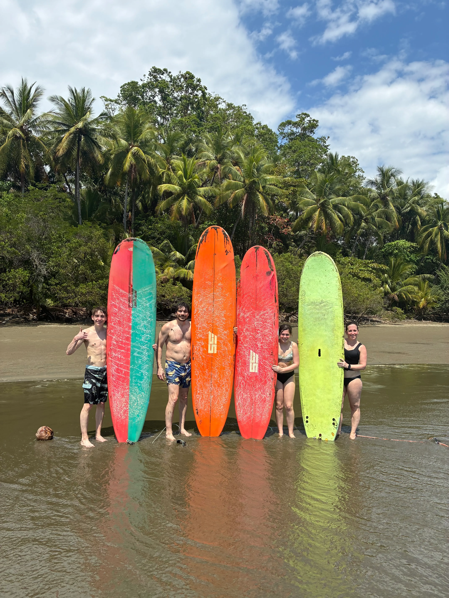

EXPLORE OSA · OUR SIGNATURE EXPERIENCE
Surf Lessons
Learn to surf with Greivin and Hannah at Playa Chaman. Private lessons for all levels and ages, with a focus on safety, confidence, technique and having fun in the water.
Our private surf lessons are designed for beginners and intermediate surfers who want personalized instruction in a relaxed environment.
- 2-hour private lesson
- 30 minutes of beach safety and technique
- Fruit and water included
- English and Spanish
- Beginner and intermediate levels
- Meeting point: Explora Osa shop next to Restaurant Nativo at Playa Chaman
- Schedule is flexible depending on tides and weather
- Photos and videos available for +$10